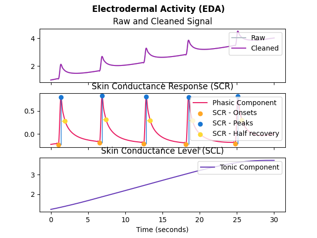

EDA
Contents
EDA#
Main#
eda_analyze()#
- eda_analyze(data, sampling_rate=1000, method='auto')#
EDA Analysis
Perform EDA analysis on either epochs (event-related analysis) or on longer periods of data such as resting-state data.
- Parameters
data (Union[dict, pd.DataFrame]) – A dictionary of epochs, containing one DataFrame per epoch, usually obtained via epochs_create, or a DataFrame containing all epochs, usually obtained via epochs_to_df. Can also take a DataFrame of processed signals from a longer period of data, typically generated by eda_process or bio_process. Can also take a dict containing sets of separate periods of data.
sampling_rate (int) – The sampling frequency of the signal (in Hz, i.e., samples/second). Defaults to 1000Hz.
method (str) – Can be one of ‘event-related’ for event-related analysis on epochs, or ‘interval-related’ for analysis on longer periods of data. Defaults to ‘auto’ where the right method will be chosen based on the mean duration of the data (‘event-related’ for duration under 10s).
- Returns
DataFrame – A dataframe containing the analyzed EDA features. If event-related analysis is conducted, each epoch is indicated by the Label column. See eda_eventrelated and eda_intervalrelated docstrings for details.
See also
bio_process,eda_process,epochs_create,eda_eventrelated,eda_intervalrelatedExamples
In [1]: import neurokit2 as nk # Example 1: Download the data for event-related analysis In [2]: data = nk.data("bio_eventrelated_100hz") # Process the data for event-related analysis In [3]: df, info = nk.bio_process(eda=data["EDA"], sampling_rate=100) In [4]: events = nk.events_find(data["Photosensor"], threshold_keep='below', ...: event_conditions=["Negative", "Neutral", "Neutral", "Negative"]) ...: In [5]: epochs = nk.epochs_create(df, events, sampling_rate=100, epochs_start=-0.1, epochs_end=1.9) # Analyze In [6]: analyze_epochs = nk.eda_analyze(epochs, sampling_rate=100) In [7]: analyze_epochs Out[7]: Label Condition ... SCR_RiseTime SCR_RecoveryTime 1 1 Negative ... NaN NaN 2 2 Neutral ... NaN NaN 3 3 Neutral ... NaN NaN 4 4 Negative ... NaN NaN [4 rows x 9 columns] # Example 2: Download the resting-state data In [8]: data = nk.data("bio_resting_8min_100hz") # Process the data In [9]: df, info = nk.eda_process(data["EDA"], sampling_rate=100) # Analyze In [10]: analyze_df = nk.eda_analyze(df, sampling_rate=100) In [11]: analyze_df Out[11]: SCR_Peaks_N SCR_Peaks_Amplitude_Mean 0 2.0 0.936103
eda_plot()#
- eda_plot(eda_signals, sampling_rate=None)#
Visualize electrodermal activity (EDA) data
- Parameters
eda_signals (DataFrame) – DataFrame obtained from eda_process().
sampling_rate (int) – The desired sampling rate (in Hz, i.e., samples/second). Defaults to None.
- Returns
fig – Figure representing a plot of the processed EDA signals.
Examples
In [1]: import neurokit2 as nk In [2]: eda_signal = nk.eda_simulate(duration=30, scr_number=5, drift=0.1, noise=0, sampling_rate=250) In [3]: eda_signals, info = nk.eda_process(eda_signal, sampling_rate=250) In [4]: fig = nk.eda_plot(eda_signals)
See also
eda_process
{kind=link}